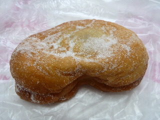
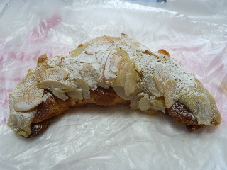
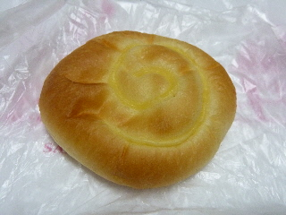
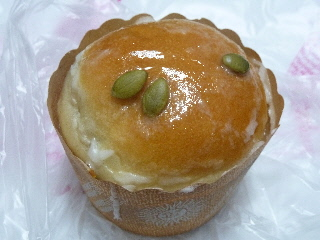
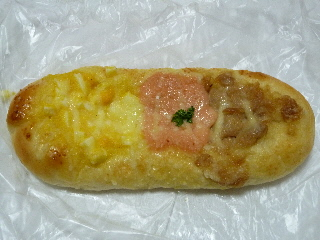
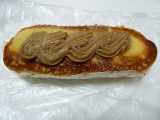
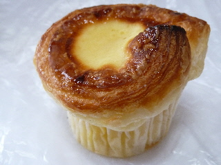
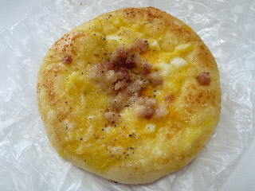

パード・レリルのあんドーナッツ（白玉入り）
2014/08/31
ちょっと変わった形のあんどーなっつです。
何だろう？まがたまの形かな？

ドーナッツの中には、こしあんと白玉が入っています。
ぜんざいみたいですね。
なめらかなこしあんと白玉の感じが、和菓子っぽかったです。
美味しかったです。
税別160円でした。
島根県出雲市平野町302
閉店しました。
このパンは個体差が色々あったので、砂糖多目で白いものを買いました。

甘そうで美味しそうです。
ぱっと見だけでも甘そうなんですが、中にクリームも入ってて、ダブルで甘いです。
お菓子を食べたーって感じがして良かったです。
税別190円でした。
2014/08/31
ちょっと変わった形のあんどーなっつです。
何だろう？まがたまの形かな？

ドーナッツの中には、こしあんと白玉が入っています。
ぜんざいみたいですね。
なめらかなこしあんと白玉の感じが、和菓子っぽかったです。
美味しかったです。
税別160円でした。
2013/10/06
平べったくて小さなクリームぱんです。

100円で安いです。
100円なら納得です。
平べったいので、クリーム少ないかなー？って思ったんですが、美味しいクリームがちゃんと入っていました。
しっかり甘くて良かったです。
2013/10/06
クリームが入ったカップ入りのパンです。

上部には砂糖があったんですが、持って帰るときに溶けちゃって、ちょっと格好悪い写真になってしまいました。
パンの中の上部に、かぼちゃ味のクリームとカラメル味のクリームが入っていました。
カラメル味があるので「あ！プリンだ！」って気分になりました。
カラメル味っていいですね。
3種類の味が一度に楽しめるお得なパンがありました。

両サイドのタマゴとツナはあっさりめの味で、真ん中のメンタイソースが濃い味でした。
あっさり→濃い→あっさりで、後味がのこらなくていいですね。

これは渋皮マロンです。
甘いパンに甘いクリームが綺麗に乗っていますね。
2012/05/26
出雲ミルクの里ホルン店（中酪）のあとに出来たパン屋さん、パードレリルに行きました。
パードレ出雲店って名前じゃないんですね。
他の店舗とは何か違うんでしょうか？

「うれっこ」って名前のパンです。人気商品なんでしょうか？
小さいデニッシュパンの中に、沢山のチーズクリームが入っていました。
甘くて美味しい菓子パンでした。次行っても買うかも。

これはカルボナーラです。
カルボナーラなので濃い味を想像したんですが、意外とあっさりしてました。
まだ出来てまもないので、いろんな形のパンがありました。
今後に期待します。